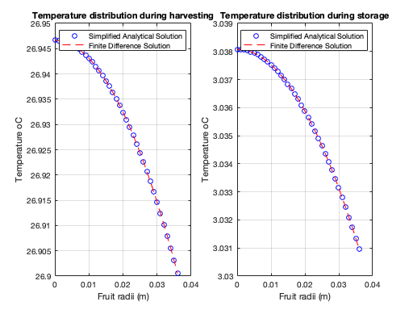
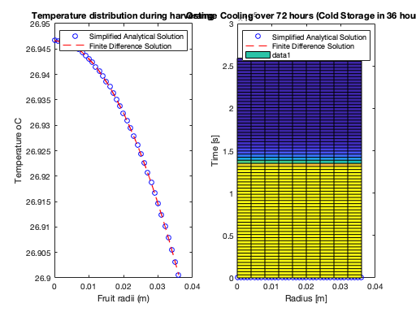

Biological and Agricultural Engineering Department
Modeling and Analysis of Physical and Biological Processes: EBS 270 Homework No. 3 - Due Date: May 28, 2019 Student: Guilherme De Moura Araujo
Contents
- Analytical Solution from Homework #1
- Finite Difference Solution
- Problem 1 comments
- Alternative hand written solution (PLEASE DON'T RUN THIS SECTION IF YOU
- Transient Orange Cooling using PDEPE
- Problem 2a
- Temperature as a function of time for the last node (orange outer surface)
- Problem 2b
- Problem 3b
- Problem 3c
- Problem 3d
- Functions Required for PDEPE
clear all; clc; global T_Harvest T_Storage rho cp a a0 a1 k h w he T_Harvest = 26.7; % Ambiente Temperature at Harvest, (oC) T_Storage = 3; % Storage temperature (oC) rho = 998; % Density of orange (km/m3) cp = 3900; % Specific heat of orange (J/kg/oC) a = 0.036; % Radius of fruit (m) a0 = 4.71; a1 = 3.55; %A = a0 + a1*T; % Heat production due to respiration (J/(s-m3)) k = 0.47; % Thermal Conductivity of the fruit (W/m/oC) h = 6; % Convective heat transfer coefficient at the fruit surface (W/m2/oC) w = sqrt(a1/k); he = h-k/a; dr = 0.001; %Random value adopted by student
Analytical Solution from Homework #1
Harvesting condiions
T_Inf = T_Harvest; alpha = -(a0 + a1*T_Inf)/a1; A = -(alpha*(k+he*a))/(he*sin(w*a)+k*w*cos(w*a)); j = 1; for r=0:dr:a if r == 0 T_H(j) = A*w-((a0+a1*T_Inf)/a1)+T_Inf; else u_H(j) = A*sin(w*r)+alpha*r; T_H(j) = u_H(j)/r+T_Inf; end j = j+1; end %-------------------------------------------------------------------------- % Storage conditions T_Inf = T_Storage; alpha = -(a0 + a1*T_Inf)/a1; A = (-alpha*(k+he*a))/(he*sin(w*a)+k*w*cos(w*a)); j = 1; for r=0:dr:a if r == 0 T_S(j) = A*w-((a0+a1*T_Inf)/a1)+T_Inf; else u_S(j) = A*sin(w*r)+alpha*r; T_S(j) = u_S(j)/r+T_Inf; end j = j+1; end
Finite Difference Solution
N = 37; % Number of nodes dr = a/(N-1); % Delta r -> Same used for analytical solution alpha = k/(dr*dr); % Constant beta = a1-2*alpha; AN = zeros(10,10); for i=1:N for j=1:N if i>=2 if i==j AN(i,j) = beta; AN(i,j-1) = (alpha-alpha/(i-1)); if i<N AN(i,j+1) = (alpha+alpha/(i-1)); end end end end end AN(1,1) = a1-6*alpha; AN(1,2) = 6*alpha; AN(N,N-1) = 2*alpha; AN(N,N) = -2*(alpha+h/a+h/dr)+a1; FNH = -a0*ones(N,1); FNH(N)= -a0-2*h*(1/a+1/dr)*T_Harvest; FNS = -a0*ones(N,1); FNS(N)= -a0-2*h*(1/a+1/dr)*T_Storage; TNH = inv(AN)*FNH; TNS = inv(AN)*FNS; j = 0:dr:a; subplot(1,2,1) plot(0:a/(length(T_H)-1):a,T_H,'bo'); hold on plot(j,TNH,'r--'); legend('Simplified Analytical Solution','Finite Difference Solution') title('Temperature distribution during harvesting'); xlabel('Fruit radii (m)');ylabel('Temperature oC'); grid subplot(1,2,2) plot(0:a/(length(T_H)-1):a,T_S,'bo'); hold on plot(j,TNS,'r--'); legend('Simplified Analytical Solution','Finite Difference Solution'); title('Temperature distribution during storage'); xlabel('Fruit radii (m)');ylabel('Temperature oC'); grid
Problem 1 comments
After plotting Simplified Analytical Solution vs. Finite Difference we can notice that both results are in perfect accord with each other.s
Alternative hand written solution (PLEASE DON'T RUN THIS SECTION IF YOU
RAN THE PREVIOUS SECTION)
N = 10; % Total number of Nodes (From T0 to T9) dr = a/(N-1); alpha = k/(dr*dr); % Constant beta = a1-2*alpha; A = [a1-6*alpha 6*alpha 0 0 0 0 0 0 0 0; 0 beta 2*alpha 0 0 0 0 0 0 0; 0 alpha/2 beta 3/2*alpha 0 0 0 0 0 0; 0 0 2/3*alpha beta 4/3*alpha 0 0 0 0 0; 0 0 0 3/4*alpha beta 5/4*alpha 0 0 0 0; 0 0 0 0 4/5*alpha beta 6/5*alpha 0 0 0; 0 0 0 0 0 5/6*alpha beta 7/6*alpha 0 0; 0 0 0 0 0 0 6/7*alpha beta 8/7*alpha 0; 0 0 0 0 0 0 0 7/8*alpha beta 9/8*alpha; 0 0 0 0 0 0 0 0 2*alpha -2*(alpha+h/a+h/dr)+a1]; FH = [-a0;-a0;-a0;-a0;-a0;-a0;-a0;-a0;-a0;-a0-2*h*(1/a+1/dr)*T_Harvest]; TH = inv(A)*FH; FS = [-a0;-a0;-a0;-a0;-a0;-a0;-a0;-a0;-a0;-a0-2*h*(1/a+1/dr)*T_Storage]; TS = inv(A)*FS; j = 0:a/(N-1):a; subplot(1,2,1) plot(0:a/(length(T_H)-1):a,T_H,'bo'); hold on plot(j,TH,'r--'); legend('Simplified Analytical Solution','Finite Difference Solution') title('Temperature distribution during harvesting'); xlabel('Fruit radii (m)');ylabel('Temperature oC'); grid subplot(1,2,2) plot(0:a/(length(T_H)-1):a,T_S,'bo'); hold on plot(j,TS,'r--'); legend('Simplified Analytical Solution','Finite Difference Solution'); title('Temperature distribution during storage'); xlabel('Fruit radii (m)');ylabel('Temperature oC'); grid
Transient Orange Cooling using PDEPE
global Q ER Q = 11.6e+12; ER = 7569; r = 0:dr:a; m = 2; t = 0:(259200/71):259200; %3600 s/h * 24/day * 3days = 259200 s sol = pdepe(m, @pdefun, @pdeic, @pdebc, r, t); % Surface plot surf(r, t, sol) title('Orange Cooling over 72 hours (Cold Storage in 36 hours)') xlabel('Radius [m]') ylabel('Time [s]')
Problem 2a
figure plot(r, T_S, 'bo', r, TNS, 'r--', r, sol(end,:), 'g--o'); title('Steady state solutions') xlabel('Radius, [m] '); ylabel('Temperature [ oC]'); legend('Analytical Solution', 'Finite Difference', 'Pdepe'); grid; % Comments: % We can see that all three methods in accord with each other.
Error using plot Vectors must be the same length. Error in EBS270_HW3 (line 173) plot(r, T_S, 'bo', r, TNS, 'r--', r, sol(end,:), 'g--o');
Temperature as a function of time for the last node (orange outer surface)
figure plot(t, sol(:,end)) title('Temperature of Orange Surface over Time (outer surface)') xlabel('Time [s]') ylabel('Temperature [oC]')
Problem 2b
T_Linear = sol(end,:); % Comment out for 2b T_Arrhenius = sol(end,:); DiffT = T_Linear - T_Arrhenius; avgT = mean(DiffT(:)); fprintf('Average difference temperature in the steady state: %.5f oC\n',avgT); % Comments: after running pdepe two times, the average temperature % difference between the linear assumption and the equation of Arrhenius % was calculated as 0.0027 oC, which is slightly insignificant. Therefore % we conclude that our previous assumption was good.
Problem 3b
T_homogenous = sol(end,:); % Comment out for 3b T_descontinuity = sol(end,:); DiffT2 = T_homogenous - T_descontinuity; avgT2 = mean(DiffT2(:)); fprintf('Average difference temperature in the steady state: %.5f oC\n',avgT2); % Comments: after running pdepe two times, the average temperature % difference between the homogenous assumption and the more complex model % (material descontinuity flesh-rind) was calculated as -0.00111 oC, which % is slightly insignificant. Therefore we conclude that our previous % assumption (material is homogenous) was good.
Problem 3c
T = sol(end,end); area = 4*pi*a^2; Qremoved = h * area * (T-T_Storage); fprintf('Heat required to be removed: Q = %.5f J/s\n',Qremoved); % Comments: From homework 1 we calculated Q = 0.003 J/s; and now we found Q % = 0.028 J/s. Again, the difference is very small. Suggesting that a % simpler model yields good results just as a more complex model.
Problem 3d
V = 4/3*pi*a^3; Q2 = rho * cp * V * (T_Harvest - T) % calculates E for 3d fprintf('Heat required to be removed: Q = %.2f J/s\n',Q2); % Comments: From homework 1 we calculated Q = 18,100 J/s; and now we found % Q = 18,000 J/S. Again, the difference is very small. Suggesting that a % simpler model yields good results just as a more complex model.
Functions Required for PDEPE
pdepe
function [c,f,s] = pdefun(x,t,u,DuDx) global a0 a1 cp h he Q ER rho k c = rho * cp; % Uncomment the if statement for parts 3b, 3c and 3d % if x <= 0.033 % k = 0.47; % else % k = 0.23; % end f = k * DuDx; s = a0 + a1 * u; % comment this out for 2b and after % s = Q * exp(-ER/(u + 273)); % uncomment this out for 2b and after end % IC function u0 = pdeic(x) global T_Harvest u0 = T_Harvest; end % BC function [pl,ql,pr,qr] = pdebc(xl,ul,xr,ur,t) global T_Harvest T_Storage h pl = 0; ql = 1; if t < 129600 pr = h * (ur - T_Harvest); else pr = h * (ur - T_Storage); end qr = 1; end